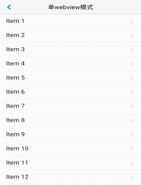
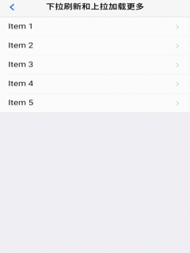

概述
为实现下拉刷新功能，大多数 H5 框架都是通过 DIV 模拟下拉回弹动画，在低端 android 手机上，DIV 动画经常出现卡顿现象（特别是图文列表的情况); yyan 通过使用原生 webview 下拉刷新解决这个 DIV 动画的卡顿问题，并且拖动效果更加流畅；
这里提供两种模式的下拉刷新，以适用不同场景：
单 webview 模式
-
效果展示：
 -
动画原理：
下拉刷新时，触发的是原生下拉刷新控件，而整个
webview位置不会发生变化，所以不会在拖动过程中发生DOM重绘，当控件拖动到一定位置触发动态加载数据以及刷新操作。此模式下拉刷新，相比双webview 模式，不创建额外 webview，性能更优。 -
使用方法：
yyan 初始化时设置
pullRefresh各项参数，与双 webview 模式的子页面设置是一样的。说明：- DOM结构无特殊要求，只需要指定一个下拉刷新容器标识即可
yyan.init({ pullRefresh : { container:"#refreshContainer",//下拉刷新容器标识，querySelector能定位的css选择器均可，比如：id、.class等 down : { style:'circle',//必选，下拉刷新样式，目前支持原生5+ ‘circle’ 样式 color:'#2BD009', //可选，默认“#2BD009” 下拉刷新控件颜色 height:'50px',//可选,默认50px.下拉刷新控件的高度, range:'100px', //可选 默认100px,控件可下拉拖拽的范围 offset:'0px', //可选 默认0px,下拉刷新控件的起始位置 auto: true,//可选,默认false.首次加载自动上拉刷新一次 callback :pullfresh-function //必选，刷新函数，根据具体业务来编写，比如通过ajax从服务器获取新数据； } } }); -
模式说明：
- 优点：
- 性能更优，体现在两点：
- 相比双webview，不创建额外子 webview 性能消耗更少
- 下拉拖动过程中不会发生重绘，也减少了性能消耗
- 性能更优，体现在两点：
-
缺点：
- 目前仅支持‘cricle’样式以及该样式的颜色自定义
- 优点：
双 webview 模式
-
效果展示：
 -
动画原理：
使用双 webview 模式的下拉刷新，创建一个子 webview 添加列表；拖动时，拖动的是一个完整的 webview，避免了类似 DIV 拖动流畅度不好的问题，回弹动画使用原生动画；在 iOS 平台，H5 的动画已经比较流畅，故依然使用 H5 方案。两个平台实现虽有差异，但 yyan 经过封装，可使用一套代码实现下拉刷新。
-
使用方法：
主页面内容比较简单，只需要创建子页面即可：
yyan.init({ subpages:[{ url:pullrefresh-subpage-url,//下拉刷新内容页面地址 id:pullrefresh-subpage-id,//内容页面标志 styles:{ top:subpage-top-position,//内容页面顶部位置,需根据实际页面布局计算，若使用标准yyan导航，顶部默认为48px； .....//其它参数定义 } }] });iOS平台的下拉刷新，使用的是 yyan 封装的区域滚动组件， 为保证两个平台的 DOM 结构一致，内容页面需统一按照如下 DOM 结构构建：
<!--下拉刷新容器--> <div id="refreshContainer" class="yyan-content yyan-scroll-wrapper"> <div class="yyan-scroll"> <!--数据列表--> <ul class="yyan-table-view yyan-table-view-chevron"> </ul> </div> </div>其次，通过 yyan.init 方法中 pullRefresh 参数配置下拉刷新各项参数，如下：
yyan.init({ pullRefresh : { container:"#refreshContainer",//下拉刷新容器标识，querySelector能定位的css选择器均可，比如：id、.class等 down : { height:50,//可选,默认50.触发下拉刷新拖动距离, auto: true,//可选,默认false.首次加载自动下拉刷新一次 contentdown : "下拉可以刷新",//可选，在下拉可刷新状态时，下拉刷新控件上显示的标题内容 contentover : "释放立即刷新",//可选，在释放可刷新状态时，下拉刷新控件上显示的标题内容 contentrefresh : "正在刷新...",//可选，正在刷新状态时，下拉刷新控件上显示的标题内容 callback :pullfresh-function //必选，刷新函数，根据具体业务来编写，比如通过ajax从服务器获取新数据； } } }); -
模式说明：
- 优点：
- 可自定义下拉刷新样式，更改文字等等
-
缺点：
- 相比单 webview，性能消耗更大，不过都比 div 模式的要好用
- DOM结构需要统一配置
- 优点：
-
滚动到特定位置
下拉刷新组件滚动到特定位置的方法类似区域滚动组件
示例：在 hello yyan 下拉刷新示例中，实现了双击标题栏，让列表快速回滚到顶部的功能；代码如下：
var contentWebview = null; //监听标题栏的双击事件 document.querySelector('header').addEventListener('doubletap',function () { if(contentWebview==null){ contentWebview = plus.webview.currentWebview().children()[0]; } //内容区滚动到顶部 contentWebview.evalJS("yyan('#pullrefresh').pullRefresh().scrollTo(0,0,100)"); }); -
更改下拉刷新文字位置
*可以解决修改下拉刷新子页面默认
top值后,下拉刷新提示框位置异常问题根据实际需求在父页面给yyan-content设置top属性
目前仅支持 双 webview 模式
.yyan-bar-nav ~ .yyan-content .yyan-pull-top-pocket{ top: 180px !important; }
自动触发下拉刷新
yyan 支持设置首次加载时自动触发一次下拉刷新，配置如下auto参数为:true即可，上拉加载同样支持此配置
yyan.init({
pullRefresh : {
container:"#refreshContainer",//下拉刷新容器标识，querySelector能定位的css选择器均可，比如：id、.class等
down : {
auto: true,//可选,默认false.首次加载自动下拉刷新一次
},
up : {
auto: true //可选,默认false.首次加载自动上拉加载一次
}
}
});下拉刷新结束
两种模式在下拉刷新过程中，当获取新数据后，都需要执行 endPulldown 方法，
该方法的作用是关闭“正在刷新”的样式提示，内容区域回滚顶部位置，如下：
function pullfresh-function() {
//业务逻辑代码，比如通过ajax从服务器获取新数据；
......
//注意，加载完新数据后，必须执行如下代码，注意：若为ajax请求，则需将如下代码放置在处理完ajax响应数据之后
//没有更多内容了，endPulldown 传入true， 不再执行下拉刷新
yyan('#refreshContainer').pullRefresh().endPulldown();
}
目前仅支持 双 webview 模式